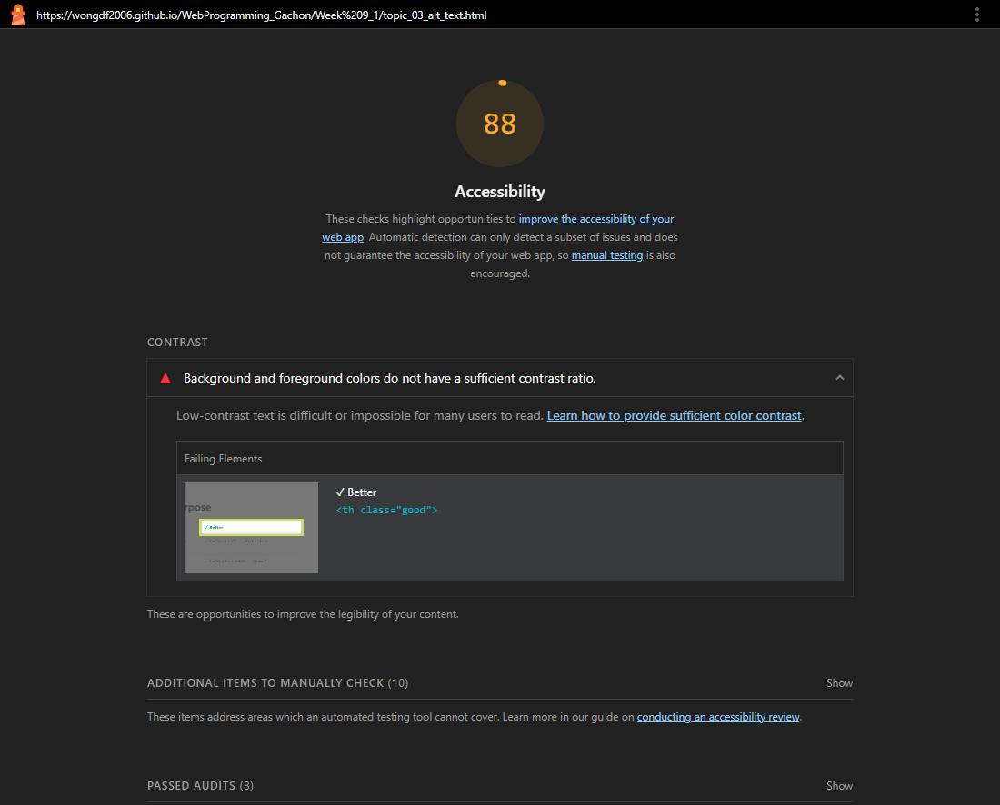
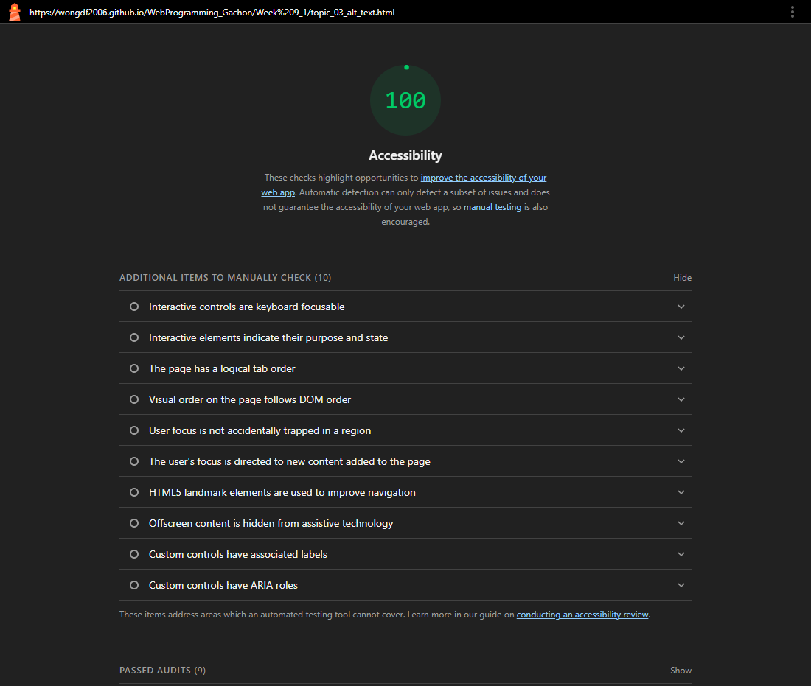
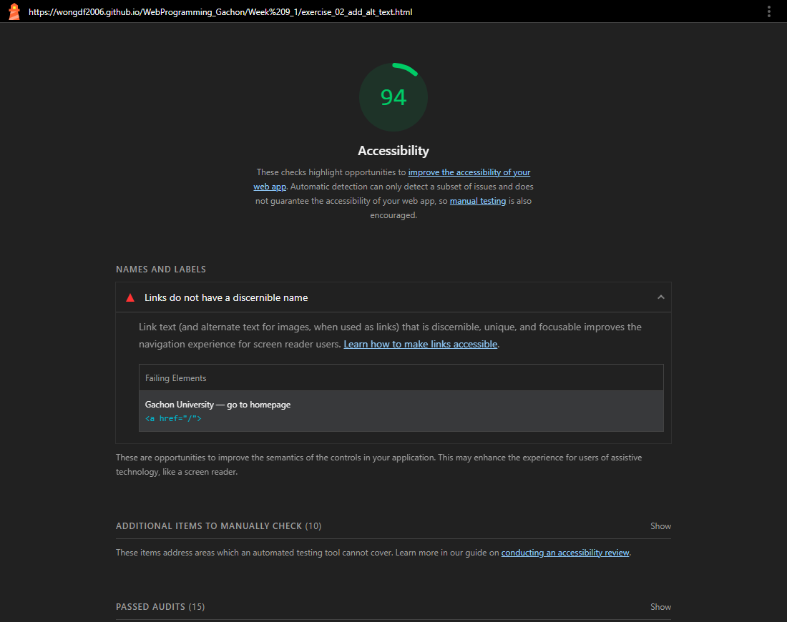
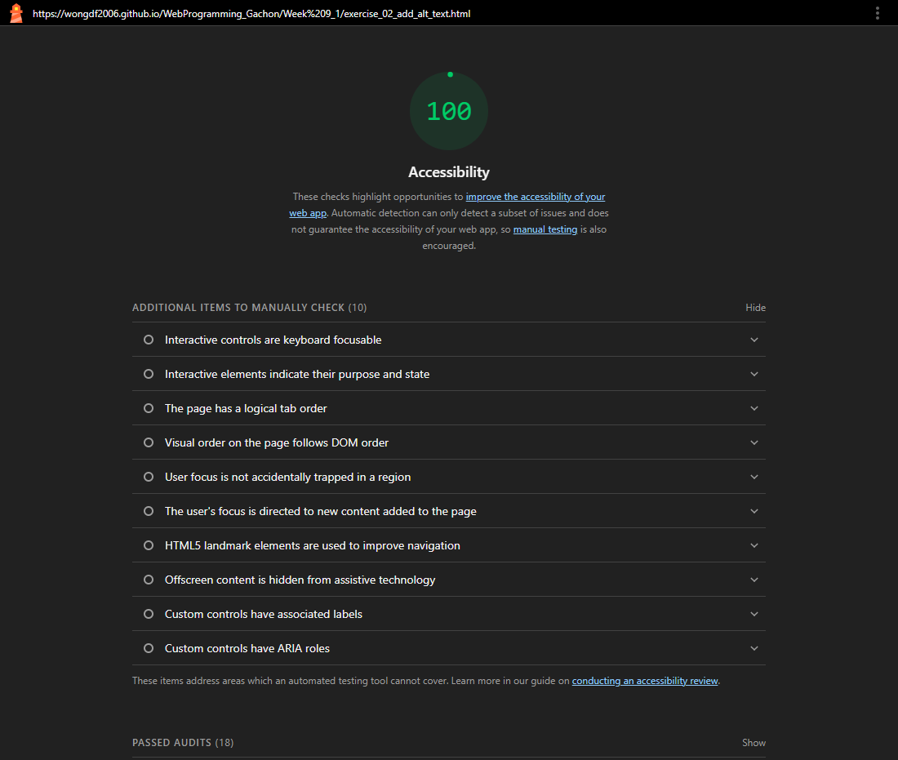

Homework 1 · Lighthouse Accessibility Audit — Week 9_1
Audited target: every page in wongdf2006.github.io/WebProgramming_Gachon/Week 9_1/ · Lighthouse 12.6.0, Accessibility, desktop · 3 Nov 2026
Summary
Lighthouse was run on all 21 live Week 9_1 pages. Nine failed, mostly on the colour-contrast rule the lessons teach. Each failure's cause was fixed, the pages were published, and Lighthouse was re-run on the live pages.
Step 1 & 4 · Before and after screenshots




Every page that failed
| Page | Failing audit | Before | After |
|---|---|---|---|
| topic_03_alt_text | color-contrast | 88 | 100 |
| topic_01_semantic_html | color-contrast | 89 | 100 |
| topic_04_button_vs_div | color-contrast | 89 | 100 |
| topic_06_color_contrast | color-contrast | 89 | 100 |
| topic_03_semantic_html | color-contrast | 90 | 100 |
| topic_08_color_contrast | color-contrast | 90 | 100 |
| topic_02_native_elements | color-contrast | 91 | 100 |
| homework_lighthouse_audit | color-contrast | 93 | 100 |
| exercise_02_add_alt_text | link-name | 94 | 100 |
The other 12 pages already scored 100 and still do. The new Week 9_1 overview page also scores 100 (before, the folder address returned a 404).
Step 2 & 3 · What I changed
1 · Green "good" labels too light — WCAG 1.4.3 Contrast (AA)
The ✓ labels used #16a34a on white: 3.29 : 1, below the 4.5 : 1 minimum. A darker green reaches 5.02 : 1.
Fixed on 4 topic pages, plus the "✓ Pass" result in the contrast checker.
Before
.good { color: #16a34a; } /* 3.29 : 1 */After
.good { color: #15803d; } /* 5.02 : 1 */2 · Link with no name — WCAG 2.4.4 Link Purpose (A) / 4.1.2 Name, Role, Value (A)
The logo link's only content was an image hidden with display: none. That also removes it from the accessibility tree,
so its alt text was never read and screen readers announced an empty link. Hiding it visually instead keeps the alt text as the link's name.
Before
img { display: none; }After
/* hidden visually, still read aloud */
img { position: absolute; width: 1px; height: 1px;
overflow: hidden; clip: rect(0 0 0 0);
white-space: nowrap; }3 · Grey text and button too light — WCAG 1.4.3 Contrast (AA)
| Where | Before | After |
|---|---|---|
| "Due…" line on this page | #64748b on #f0f4ff — 4.32 : 1 | #475569 — 6.89 : 1 |
| "Fake button" in native elements | white on #94a3b8 — 2.56 : 1 | white on #475569 — 7.58 : 1 |
| Contrast checker default colour | #94a3b8 on white — 2.56 : 1 | #475569 — 7.58 : 1 |
The checker still lets you pick a failing colour to see "✗ Fail"; it just no longer starts on one.
4 · Deliberately bad examples shown as real text — WCAG 1.4.3 (AA) and 1.1.1 Non-text Content (A)
The contrast lesson showed its "fail" samples as real low-contrast text, so the page itself failed. I kept the samples visible but drew them as labelled images, with the explanation next to them in readable text.
Before
<span class="sample" style="color:#ff9999"> #ff9999 — fail (2.1 : 1) </span>
After
<span class="sample">
<svg role="img" aria-label="Example text
in #ff9999 on white" ...>
<text fill="#ff9999">Sample</text>
</svg> #ff9999 — fail (2.0 : 1)
</span>Takeaways
- The failing colours look readable on a good screen, but measured 2.56–4.32 : 1. Contrast has to be measured, not judged by eye.
display: nonehides content from screen readers too. If the hidden element is the only label a link has, the link loses its name.- Lighthouse checks only part of WCAG. Keyboard use, focus order, and whether alt text is good still need manual testing.